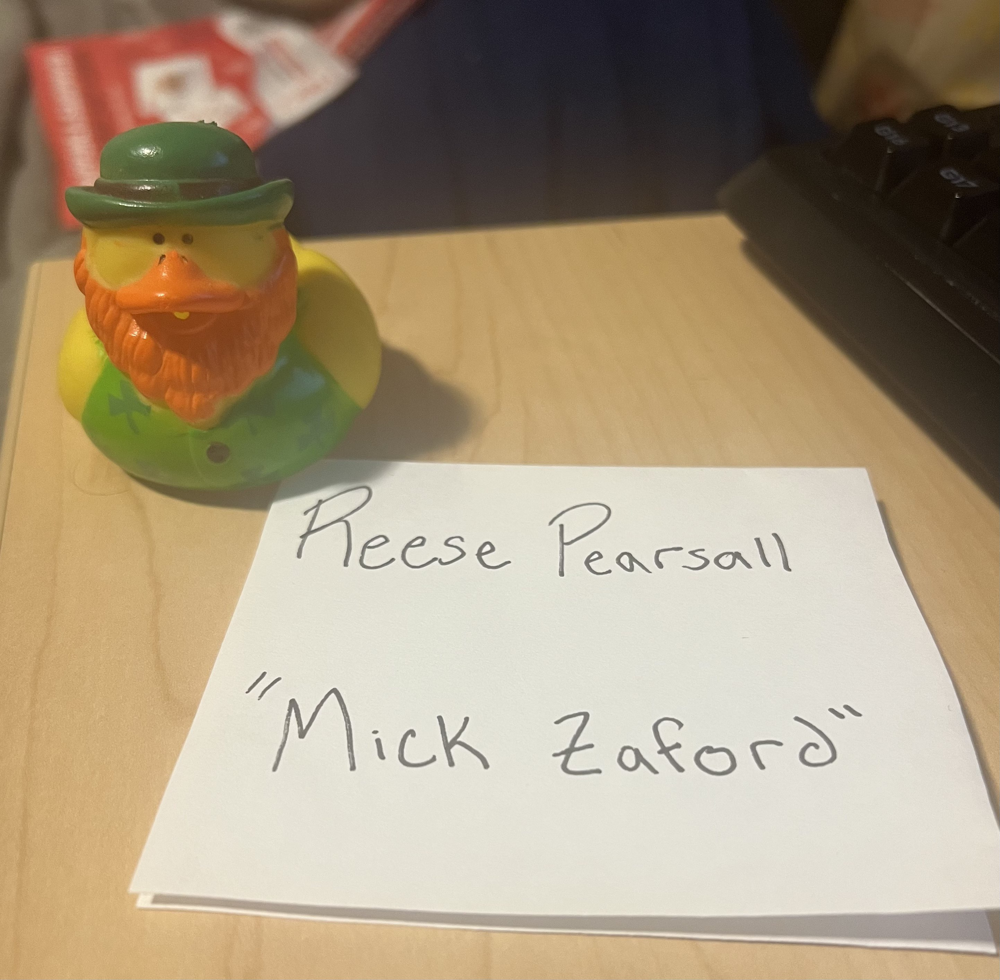

Rubber Duck Extra Credit
Due Date and Submission Requirements
- Due Date: Friday, May 2nd at 11:59 p.m.
Directions
Hopefully your duck has been helpful in debugging your code. You will keep your duck for the rest of your life. To verify that your duck is still alive, you will submit a picture of your duck posing with something that has (1) your name on it and (2) the name you gave to your rubber duck. That will help tell me that it's your duck and not a screenshot you stole from the internet.
Please make sure your picture is a jpg, jpeg, or png. Submit your picture to the D2L dropbox, and you will receive 1% extra credit to your final grade!
